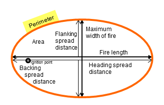

|
Surface Fire Perimeter |
The surface fire perimeter of a point source fire assumes there is no suppression action. It is based on the elliptical fire shape model. Surface fire perimeter is the distance around the outside of the ellipse. This variable applies only to surface fire. The crown fire perimeter for active and passive crown fire can be calculated in the CROWN module.
| I/O | Module | If | Notes |
| Input | None | ||
| Output | SIZE |
|  |